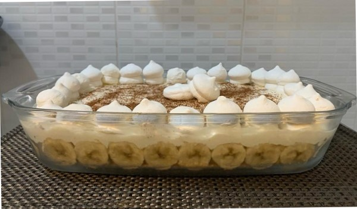
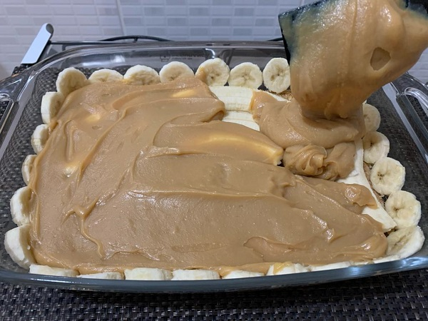

Banoffe
Esta receita não é apenas uma mistura de ingredientes, mas uma celebração da doçura da vida. Compartilhe momentos especiais com seus entes queridos enquanto se deliciam com cada garfada desta experiência culinária inesquecível.
Detalhes da Receita
Rendimento
Serve aproximadamente 15 pessoas
Tempo de Preparo
Base: 10 minutos (forno a 180°C por 10 minutos para firmar)
Creme: Variável (até engrossar a ponto de creme)
Cobertura: Variável (tempo de bater a nata até obter ponto de chantilly)
Ingredientes:
- 1 pacote de bolacha de maisena
- 5 colheres de sopa de manteiga
- 1 caixa de leite condensado
- 1 caixa de creme de leite
- 4 colheres de sopa de doce de leite
- 5 bananas
- 1 nata
- 3 colheres de açúcar refinado
Modo de Preparo:
- Triture a bolacha no liquidificador e misture com 4 colheres de manteiga derretida. Leve ao forno a 180°C por 15 minutos para firmar.
- Em uma panela, coloque 1 colher de manteiga, 1 caixa de leite condensado, 1 caixa de creme de leite e 4 colheres de doce de leite. Leve ao fogo e mexa até engrossar, formando um creme.
- Coloque as bananas já picadas sobre o creme, cobrindo todo o recipiente. 
- Bata a nata e o açúcar refinado em uma batedeira até obter ponto de chantilly. Despeje sobre o creme e as bananas.
Dica:
Adicione canela em pó para um toque especial. Decore com bananas, suspiros ou outros ingredientes de sua escolha.